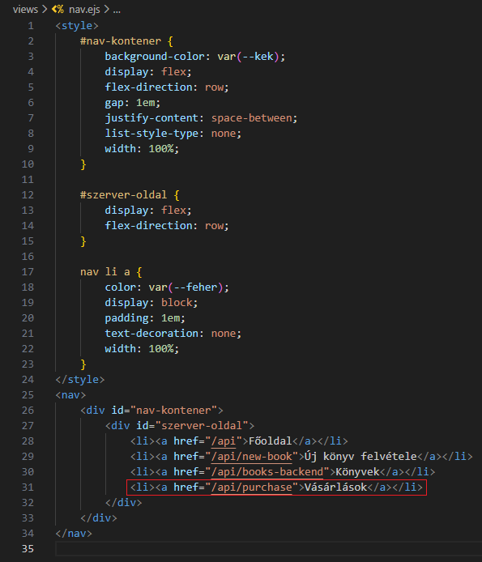
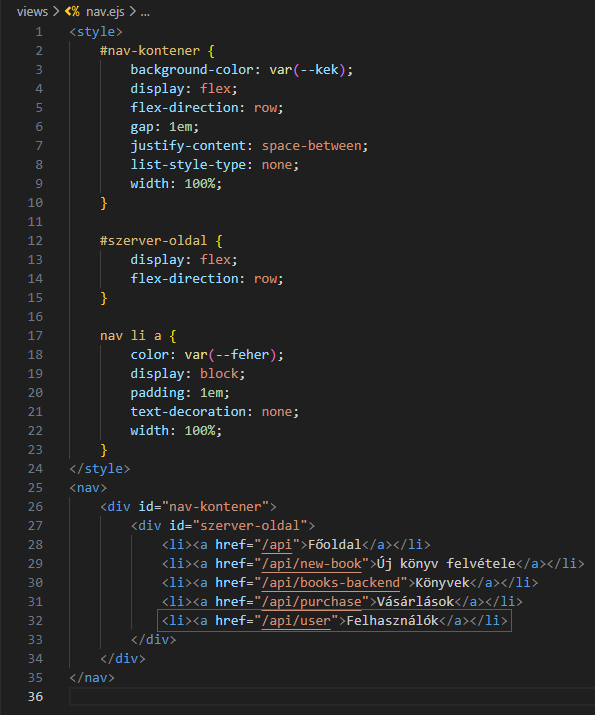
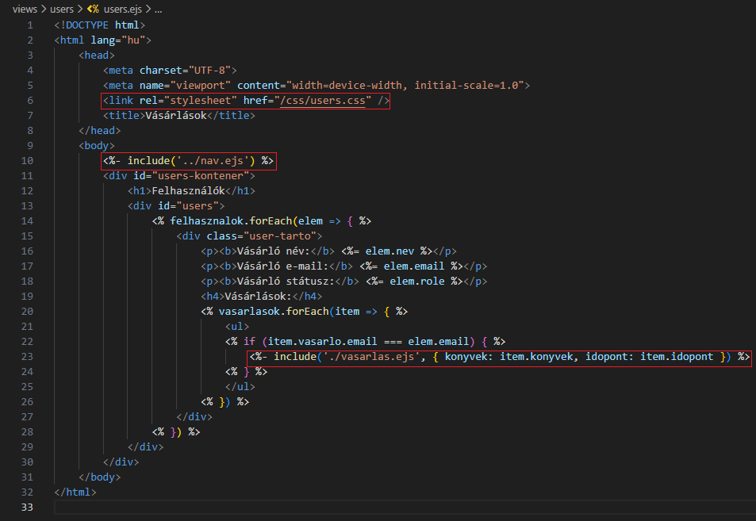
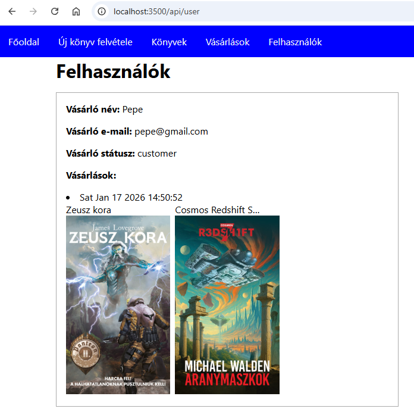
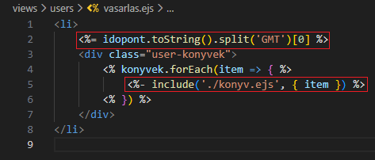
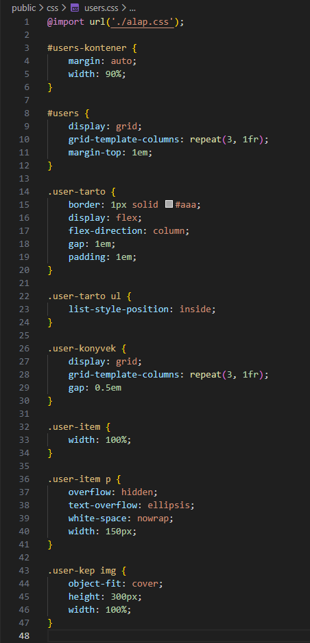

Felhasználók kezelése - users.ejs
Felhasználók kezelése - users.ejs
Ebben a részben szerkesztjük az views/users mappában a vásárlások kezeléséhez szükséges ejs állományokat.
-
Szerkesszük a
nav.ejsállományt. és -
Szerkesszük a
users.ejsállományt. és-
<link rel="stylesheet" href="/css/users.css" />- mivel aserver.mjsállományban beállítottuk a hivatkozást apublicmappára, ezért minden elemére ilyen speciálisan tudunk hivatkozni. -
<%- include('../nav.ejs') %>- beimportálása anav.ejsállománynak. -
<%- include('vasarlas.ejs', { konyvek: item.konyvek, idopont: item.idopont }) %>- beimportálása avasarlas.ejsállománynak, ahol átadjuk a{ konyvek: item.konyvek, idopont: item.idopont }objektumot.
-
-
Szerkesszük a
vasarlas.ejsállományt.-
<%= idopont.toString().split('GMT')[0] %>- ausers.ejs-től kapott objektumból kivesszük azidopontértéket és szerkesztjük. -
<%- include('./konyv.ejs', { item }) %>- beimportálása akonyv.ejsállománynak, ahol átadjuk a{ item }objektumot.
-
-
Szerkesszük a
konyv.ejsállományt.
-
<p><%= item.cim %></p>- avasarlas.ejs-től kapott objektumból kivesszük azitem.cimértéket. -
<img src="<%= item.kep %>" />- avasarlas.ejs-től kapott objektumból kivesszük azitem.kepértéket.
-
-
Szerkesszük az
users.cssállományt. -
Az eddigi munka letölthető formátumban:
backend_10.rar
Letöltés és kicsomagolás után aGitBashfelületen abackendmappában adjuk ki a következő utasítást:
npm install -
A webszerver futtatásához adjuk ki a következő utasítást a
GitBashfelületen:
node --watch ./src/server.mjs